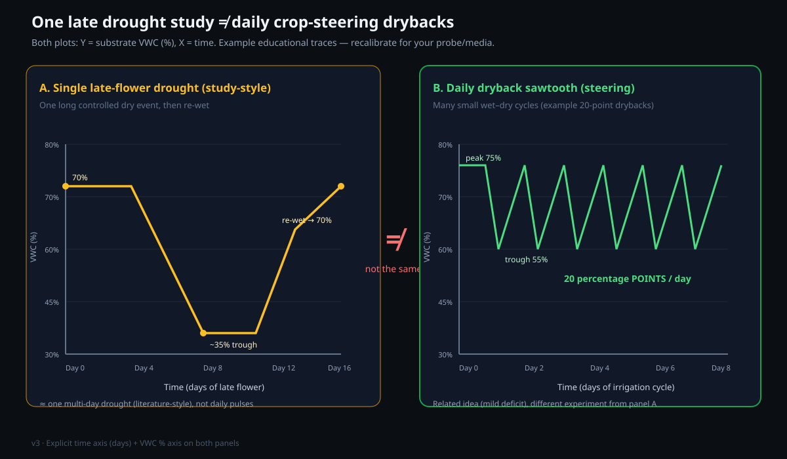

Crop steering in rockwool: water content, drybacks, and the recovery floor
The plant gets the feed that you apply in the same hour, because rockwool does not contain nutrients and has almost no buffer. Thus rockwool is the most accurate substrate to control, and it shows an error more quickly than other substrates. This paper shows how to read a water-content percentage, and how to calculate and read a dryback. It also shows the lowest water content from which the dripper can make a block wet again. It also shows how to keep the slab in the correct zone from clone to harvest without a hose.
Purpose and scope
Rockwool (stone wool) is a fiber of rock. Rockwool does not contain nutrients and does not change the feed. Thus the EC of the root zone is approximately the same as the EC of the pore water (feed that the plant does not use flows out of the block as runoff or increases in concentration during the dryback)[1].
Rockwool is the most accurate substrate to control, but it has no buffer. If the water content is incorrect, the plant shows the effect in the same hour.
This paper is only about the water and the salt in the block. Most growers feel the block with their hands to find its condition. They do not measure the water and the salt.
At the end of this paper, you will know the definition of a water-content percentage and how to calculate a dryback. You will know the minimum quantity of feed to apply. You will know the lowest water content from which the dripper can make a dry block wet again. You will also know how to keep the slab in the correct zone from clone to harvest. For this, you use sensors and an irrigation controller. You do not use a hose.
Saturate the block. Then let the water content decrease by a controlled quantity each day (the dryback). The size and the time of the dryback are the primary controls for steering. Each day, apply sufficient feed to replace the salts in the block and to get a small quantity of runoff. Do not let the water content become less than the recovery floor (approximately 25 to 30% water content). When the water content is less than this value, channeling occurs and the dripper cannot make the block wet again[2].
This paper is for a system of slabs and cubes with pressure-compensating drippers. The system has a sensor for the moisture and EC of the substrate and an irrigation controller. A typical system has a 4″ cube of the Athena type on a 3×6×36 slab[10]. When the dripper is smaller, you can control the root zone more accurately[10].
Definitions

Evidence and limitations
We want each paper to be correct. Thus we examine each paper for information that is not solid. This information comes from the view of one grower, from a small number of sources, or from grower methods that have no controlled test. We identify this information, and we do not show it as solid.
Frequently there is no paper for the decision that you must make. Then we use the reports of other growers and the methods that work in the rooms that we know. This information can help you, but it is not the result of a laboratory test. Use the methods that work for your plants, for your room and for your meters. If a table does not agree with your crop, use the data from your crop and record the difference.
- Rockwool contains almost no nutrients. The pore water has almost the same chemical properties as the feed.
- A slab that is too dry can have channeling. The slab then does not become wet again correctly.
- Dryback ranges and irrigation procedures with many shots that manufacturers use, as in the procedures of Grodan.
- Control of the runoff to keep the salt that collects in the substrate at a minimum.
- One value of the water content for the recovery floor as a constant of physics for all products.
- An inverse formula for EC that ignores plant uptake, as the accurate substrate EC.
If you find an error, make a report. We will correct it. Make the report on GitHub, with the name of the paper and the information that is incorrect. If you have a source, include it: Make a report of an accuracy problem. The regulations, labels and licenses of your area always override each procedure in these papers. The label weak in a paper shows the points where the risk of an error is highest.
Water in rockwool
A rockwool block is mostly air. Approximately 95% of its volume is space between the fibers. The fibers are a very small fraction of the volume[8]. Water attaches to the fibers as a film and fills the smaller spaces. The larger spaces stay full of air. The water content is the quantity of this space that is water, and not air, at each time.
These properties have two results. First, when the plant and the air remove water from the block, the salt stays in the block. Thus the EC of the water that stays in the block increases when the block dries. Second, because rockwool has no buffer, the roots get the EC and the water content that you set. As a result, you can control rockwool accurately and an error shows quickly.
Read the water-content percentage
In rockwool steering, each condition of the block is a position on one vertical scale. The scale shows how full of water the block is. Make sure that you know the working band and the position of the risk. After this, the only other control is the time.
The information from Grodan shows that medicinal cultivars are very different from each other. Thus there is no one correct water content[1]. Each value in this paper is a start value. It is necessary to make sure that the value is correct for your slabs and your sensor.
Make sure that you know the position of the headroom. The block has no problems at all values from field capacity to approximately 45% WC. The risk is only at the bottom. Thus a controlled dryback is safe, but a dryback that you do not control is very dangerous.
Calculate and control the dryback
A dryback is the quantity by which the water content decreases from the peak of the day to the lowest value before the next irrigation. After irrigation, the block is full of water. Then, during the day, the plant uses water and the air removes water from the block. The size of the dryback and when you let it occur are the most important controls for the growth of the plant.
Dryback in points = peak WC − trough WC. If the slab has a peak of 78% and decreases to 58% before the next irrigation, the dryback is 20 points. As a fraction of the peak, the dryback is 20 ÷ 78 = 26%. The sensor gives you the two values directly. Read the peak value after the last shot and the trough value immediately before the next shot.
| Phase | Usual dryback for each day | Effect |
|---|---|---|
| Propagation and the first stage of vegetative growth | 5 to 10 points | The roots become longer and go to the water. The steering is weak. |
| End of vegetative growth and bulking (wet) | 10 to 15 points | Maximum vegetative growth |
| Generative steering for flowers | 20 to 30 points | The flowers have a high density, and the stretch is slower. |
| During the night (in each phase) | Add 5 to 15 points | The root zone gets oxygen again. |
When the block dries during the night, air fills the spaces again. The roots and the beneficial microbes get oxygen. Tests by Grodan showed that the yield of medicinal crops increased when the usual night dryback decreased by approximately 10% (the water content was higher at night by a small quantity). The yield increased because the root zone continues to operate when the canopy does not operate[1]. Some night dryback is necessary. A night dryback that is too large is not good.
How a block dries
A dryback is good when it is less than a limit. A dryback that is more than this limit is dangerous. When the dryback is larger, the plant and the air remove more water from the block. The removal of water has four different effects, one after the other.
Many growers do not know about stage 3. Rockwool does not contain salt. Thus the salt in the water stays in the block when the plant and the air remove the water. When a block dries from 75% to 45% WC, it keeps only approximately three-fifths of its water (45 ÷ 75).
Thus the concentration of the salt in the block increases by the inverse of this fraction. This quantity is approximately two-thirds more. The EC after drying is the EC before drying divided by the fraction of water that stays in the block[3]. A feed with an EC of 3.0 can increase to more than 5.0 EC in the root zone in the late afternoon. Thus, for a large dryback, you must apply a sufficient volume of feed and get sufficient runoff to control the salt. The section about the minimum irrigation volume gives more information.
Monitor the substrate EC and not only the water content. With a generative dryback, the plant does not get water easily. The concentration of the feed in the block also increases. If the EC increases too quickly during the dryback, decrease the dryback or decrease the EC of the feed.
Threshold for a dry block
When the water content of a rockwool block is less than the recovery floor, the dripper cannot make the block wet again. A long irrigation time does not change this fact. No other fact in this paper is as important, because you can see the problem only after it occurs.
When the water content is less than approximately 25 to 30% WC, the dry fiber cannot pull water through the block and preferential flow occurs[2][3]. The flow rate of the dripper keeps a block that is in good condition full of water. But this flow rate cannot saturate a dry block again, because the water does not touch the dry inner part. The runoff is high and the sensor shows almost no change. These two symptoms show a block with channeling.
- Do not use the dripper to repair the block. More drip only causes more runoff.
- Soak the block manually. Apply a small volume of water slowly for a long time. You can also put the block in a small depth of feed. Continue until the center gets water again. The procedure can continue for some hours.
- Then use the usual irrigation times again. Find the cause of the dry block. The cause can be a dripper with a blockage or a P1 ramp that did not occur. It can also be a controller that does not operate or a dryback that is too large.
- If a block is at the recovery floor many times, it has permanent dry areas. The block does not become wet equally in all parts. Replace the block. Do not try to repair it.
Set a minimum water content in your controller as a limit. Do not let the trough become less than this value. The dryback is for steering. The floor is a safety limit. The dryback and the floor are not the same number. Make sure that you know the two numbers for each slab.
Minimum irrigation volume
When you apply feed to rockwool, two tasks are necessary. First, replace the water that the plant used. Second, flush sufficient new feed through the block. Then the salt does not collect. If the quantity of feed is too small, the EC increases and the water content decreases in the direction of the floor. If you apply too much feed, the roots are in too much water and the dryback does not occur.
- 1Make each shot increase the WC by a small number of pointsMake each shot increase the water content by approximately 2 to 5 points. If the shot is too small, the sensor does not show a change. If the shot is too large, the water goes directly to runoff.
- 2Fill the block to field capacity in the P1 rampAfter lights-on, apply some shots in sequence. Increase the water content from the lowest value of the night to field capacity. Then keep the water content at field capacity.
- 3Get a small quantity of runoff each dayWhen the block is at field capacity, make the runoff approximately 10 to 20%. Use this runoff to flush the salt that collects and to read the substrate EC[1].
- 4Use runoff EC as the feedbackIf the substrate EC or the runoff EC increases each day, you do not flush sufficiently. Increase the size or the frequency of the shots. If the EC becomes less than the target, decrease the runoff.
- 5Keep the trough more than the floor valueFor all drybacks, the trough value before irrigation must stay more than the recovery floor, with some headroom.
The minimum is the volume that keeps the water content more than the recovery floor and keeps the substrate EC at the target. In the stage with heavy flowers and high light, the minimum can be a large number of small shots. In propagation, the volume is very small. The sensor and the runoff EC give the number, and a timer does not give the number[5].
Vegetative and generative steering in rockwool
You control the plant with three selections. The first selection is the position of the block in the working band. The second is the size of the dryback for each day. The third is the time when the dryback occurs. In generative steering, the block is drier, the dryback is larger, and the dryback starts at a time before the time in vegetative steering. In vegetative steering, the block is wetter, the dryback is smaller, and the dryback starts at a time after the time in generative steering[7].
| Control | Vegetative (growth of leaves) | Generative (flower and fruit) |
|---|---|---|
| Peak WC of each day | High, at approximately field capacity | Lower, in the middle of the working band |
| Size of the dryback | Small, 5 to 15 points | Large, 20 to 30 points |
| First shot after lights-on | A short interval after lights-on, and a short ramp | A longer interval after lights-on, and a longer dryback in the night |
| Substrate EC | The lower part of the target | Higher, because the dryback increases the concentration |
| When to use | First stage of flowering, bulking, and recovery | Control of stretch, flower set, and ripening |
Tests by Grodan showed that the yield was higher when the block was always wetter during the day. The cannabinoid levels were the same. The effect occurred most in the first six of the eight weeks of flowering[1]. You can control generative growth with the time and the size of the dryback. But a quantity of water and feed that is too small is not good for the plant while it continues to make the crop.
Keep rockwool saturated
The controller keeps the block in the correct zone from clone to harvest, and you do not touch a hose. The runoff of each day flushes the salt. Thus it is not necessary to flush the block manually or to add water to a dry cube. Set the values of water content and dryback for each stage of the crop before the crop starts.
| Stage | Peak WC of each day | Dryback | Substrate EC | Runoff |
|---|---|---|---|---|
| Clone and propagation | High, with weak steering | 5 to 10 points | Use a start value that is higher than you think is correct | Very small |
| Vegetative stage | High | 10 to 15 points | Increase | Low, 5 to 10% |
| Weeks 1 to 3 of flowering | High (wet, bulking) | 10 to 18 points | Increase again | 10 to 15% |
| Weeks 4 to 6 of flowering | In the middle of the working band | 20 to 30 points | Highest | 15 to 20%, to flush the salt |
| Weeks 7 to 8 of flowering | In the middle of the working band, stable | 18 to 25 points | Decrease by a small quantity, or use the value that you set before | Keep the same value |
A controlled runoff each day continuously replaces the water in the block that has a high salt concentration with new feed. Thus the EC does not increase to a value at which it is necessary to flush the block manually. Because the trough does not become less than the recovery floor, no cube becomes very dry. Thus it is not necessary to soak a cube manually. The system keeps the water and the salt in balance each day, if the limits that you set are correct.
Systems with sensors for crop steering
You cannot use only a timer for this method. To control rockwool, measure the block and let the controller use the measurement. The result is a closed loop[5][6].
- Measure in the block. A substrate sensor reads the water content and the EC where the roots are. Use the substrate EC as the target for control. Do not use the EC of the dripper or the drain[1][4].
- Let the controller keep the curve. The irrigation controller operates the P1 ramp to field capacity, the P2 maintenance shots, and the P0 and P3 dryback periods automatically. It uses water-content setpoints and not a timer[5].
- Set the safety floor in the software. The safety floor is a minimum water content. The controller always irrigates to keep the water content more than this minimum. Thus channeling cannot occur in the block, also when the dryback that you set is too large.
- Monitor the runoff EC each day. It shows when the salt starts to collect and when you flush too much.
The related papers give more information about the equipment and the cycle of each day. They show the values that the substrate sensor measures and how the controller makes a decision. They also show the P0 to P3 cycle and how to install and operate the system.
Rockwool has no buffer. Thus a closed-loop controller can control rockwool with a smaller tolerance than each substrate that has a buffer[1]. Rockwool is an inert substrate, and thus it shows each error. But this property also makes rockwool the best substrate for automation.
Troubleshooting
| Symptom | Possible cause | Correction |
|---|---|---|
| The runoff is high and the sensor shows almost no change | Channeling occurs in the block, and the center is too dry | Soak the block manually to make it wet again. Then increase the value of the floor and do a check of the drippers. |
| The substrate EC increases each day | The runoff is not sufficient and the salt collects | Use larger shots or more frequent shots to increase the runoff of each day |
| The substrate EC becomes less than the target | You flush too much, and the runoff is too large | Decrease the size or the frequency of the shots |
| The WC stays less than field capacity | The shots are too small, a dripper has a blockage, or P1 is too short | Do a check of the drippers. Make the P1 ramp longer[9] |
| The dryback is much larger than the value that you set | The plant uses water at a high rate in high light, or a shot did not occur | Add P2 shots. Do a check of the controller and the sensor |
| The slabs are not the same across the room | The flow or the position of the drippers is different | Flush the tubing and do a check of it[9]. Use the correct number of drippers for each slab[10] |
Reference targets
- Each morning, saturate the block to field capacity with a P1 ramp.
- During the day, keep the block at field capacity with P2 maintenance shots and a small runoff.
- Let the dryback that you set occur. Set its size for the quantity of generative steering that you want.
- Do not let the trough become less than the recovery floor.
- Use the substrate EC and the water content as the targets for control. The sensor gives the values and the controller does the control.
References
- Grodan (ROCKWOOL Group). Grodan research reveals new insights into optimal irrigation strategy for large-scale production of medicinal crops. Whitepaper, with B. Nikaj; trials in partnership with Wageningen University & Research, 2020-2022. (source not from a journal, for example from a manufacturer) https://www.grodan.com/
- Owen, J., & Norden, D. (Profile Products). Understanding drainage in horticultural growing media. Greenhouse Management. (source not from a journal, for example from a manufacturer) https://www.greenhousemag.com/article/growing-media-defining-drainage-improve-substrate/
- International Society for Horticultural Science (ISHS). Utilizing the HYDRUS model as a tool for understanding soilless substrate water dynamics. Acta Horticulturae 1168. https://www.ishs.org/ishs-article/1168_41
- Moon T, Ahn TI, Son JE. Forecasting Root-Zone Electrical Conductivity of Nutrient Solutions in Closed-Loop Soilless Cultures via a Recurrent Neural Network Using Environmental and Cultivation Information. Frontiers in Plant Science. 2018;9:859. https://doi.org/10.3389/fpls.2018.00859
- Nemali, K. S. & van Iersel, M. W. (2006). An automated system for controlling drought stress and irrigation in potted plants. Scientia Horticulturae, 110(3), 292-297. https://doi.org/10.1016/j.scienta.2006.07.009
- Tavan, M., Wee, B., Brodie, G., Fuentes, S., Pang, A., & Gupta, D. (2021). Optimizing Sensor-Based Irrigation Management in a Soilless Vertical Farm for Growing Microgreens. Frontiers in Sustainable Food Systems, 4, 622720. https://doi.org/10.3389/fsufs.2020.622720
- Caplan D, Dixon M, Zheng Y (2019). Increasing inflorescence dry weight and cannabinoid content in medical cannabis using controlled drought stress. HortScience 54(5):964-969. https://doi.org/10.21273/HORTSCI13510-18
- Malik M, Tlustoš P (2025). Soilless growing media for cannabis cultivation. Agriculture 15(18):1955. https://www.mdpi.com/2077-0472/15/18/1955
- Netafim. Complete Irrigation Maintenance Guide (driplines, flushing, filtration and system upkeep). (source not from a journal, for example from a manufacturer) https://www.netafim.com/
- Athena Agriculture. Plant Spacing & Irrigation (metric), document A01.001 (pot, rockwool and pressure-compensating dripper selection). (source not from a journal, for example from a manufacturer) https://athenaag.com/
Each citation in the paper, for example [1], refers to an item in this list. Each item is a primary source or an instruction from an authority, unless the item shows a different type. The results of cannabis tissue culture change much with the genotype. Before you use the dilutions, hormone doses and local regulations, make sure that they agree with the primary sources.